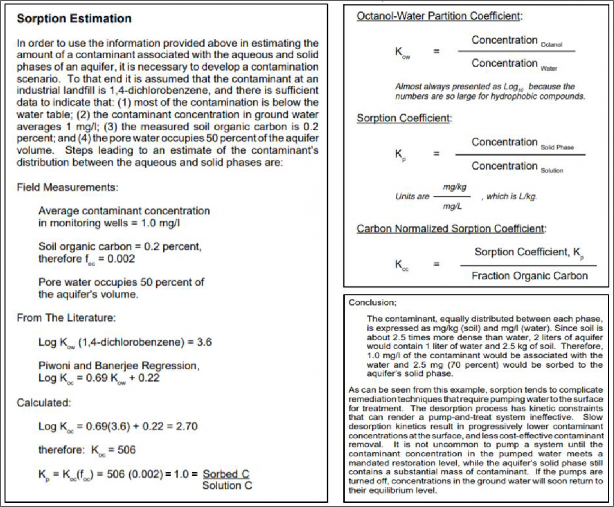
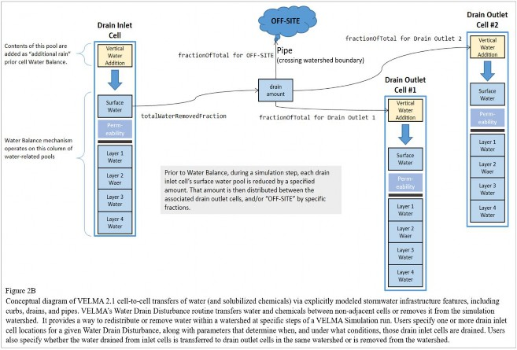
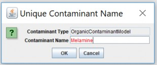
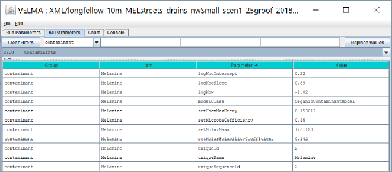
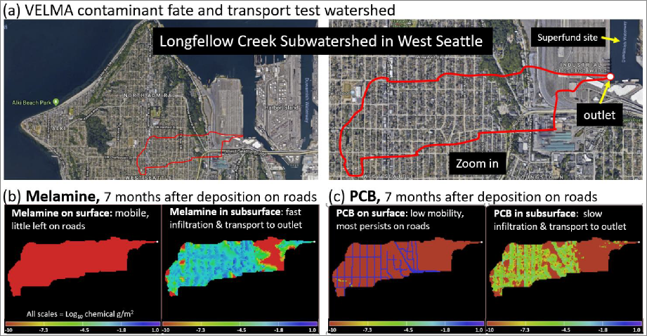

+
A.1 | Conceptual Framework: Organic Contaminant Modeling Using VELMA
Overview (Tutorial A.1_HowTo_VELMA Contaminant Modeling Conceptual Framework)
This document describes the conceptual framework underpinning the use of VELMA 2.1 to model fate and transport of organic contaminants within watersheds. We review how VELMA 2.1 simulates contaminant fate and transport within soils and hillslopes as a function of two processes: (1) the partitioning of the total amount of a contaminant between sorbed (immobile) and aqueous (mobile) phases; and (2) the vertical and lateral transport of the contaminant's aqueous phase within surface and subsurface waters.
Subsequent sections describe the interplay of contaminant sorption/desorption processes with VELMA's ecohydrological processes that control vertical and lateral transport within soils, hillslopes and watersheds.
This "HowTo" VELMA document is a companion to the two others listed below. We recommend reading this A.1 concepts document before the other two.
- Tutorial A.2 - Configure VELMA for Simulating Contaminant Fate and Transport
- Tutorial A.3 - VELMA Contaminant Modeling: Longfellow Creek Example
1.0 Introduction
Hundreds of thousands of organic contaminants have been and continue to be produced and released into the environment in a range of quantities. Some are persistent organic pollutants (POPs) resistant to environmental degradation (El-Shahawi et al. 2010). Pesticides, solvents, pharmaceuticals and industrial chemicals are a few examples. Because of their persistence, POPs can bioaccumulate and adversely affect terrestrial and aquatic food webs and human health.
Therefore, it is important to understand the "life cycle" of organic contaminants after they are released into the environment. Where and when is a contaminant deposited and in what quantities? How is it then adsorbed, degraded and transported within natural and built environments, and what is its fate in space and time?
Answers to these questions are elusive, requiring some combination of environmental monitoring (refs), advanced analytical methods (refs), and data synthesis and analysis tools. Computer simulation modeling can potentially play a larger role in data synthesis and analysis, though adequate tools are few.
VELMA 2.0 (McKane et al. 2014) has been enhanced as VELMA 2.1 to simulate the fate and transport of organic contaminants within watersheds, providing an opportunity to facilitate data synthesis and analysis for projects having enough monitoring and ecotoxicological data (refs).
This document provides a guide for using VELMA 2.1 to model fate and transport of organic contaminants. Our intent is to provide a state-of-the-science tool that addresses a specific modeling gap, namely, a spatially- distributed and scalable model for simulating process-level hydrologic and biogeochemical controls on contaminant sorption-desorption, degradation and vertical and lateral transport within soils and watersheds. Other documents in this VELMA 2.1 package illustrate new techniques for simulating the effectiveness of natural and engineered green infrastructure - riparian buffers, rain gardens, bioswales, pervious pavements, green roofs and others - for reducing contaminant loads to surface and groundwaters. VELMA 2.1 is designed to allow users to model essentially any organic contaminant in the EPA Comptox library for which solubility, partitioning, degradation and other supporting coefficients are available (https://comptox.epa.gov/dashboard/). Comptox provides information for over 760,000 chemical substances, the majority of which are organic contaminants (Williams et al. 2017; McEachran et al. 2017).
2.0 Conceptual Framework
In VELMA 2.1, contaminant fate and transport within soils and hillslopes is primarily controlled by two processes:
- the partitioning of the total amount of a contaminant between sorbed (immobile) and aqueous (mobile) phases; and
- the vertical and lateral transport of the contaminant's aqueous phase within surface and subsurface waters
Sections 2.1 and 2.2 describe the conceptual basis for the partitioning and transport modeling steps in VELMA.
2.1 Contaminant Partitioning between Sorbed and Aqueous Phases
VELMA 2.1 incorporates the methods of Piwoni and Keeley (1990) to describe the processes by which organic contaminants are partitioned between sorbed (bound by soil, immobile) and aqueous (dissolved, mobile) phases within soil columns, such as those represented in VELMA. The section on "Sorption Estimation" in Piwoni and Keeley (1990), presented below as Figure 1, provides a concise summary of the processes, parameters and calculations used to estimate partitioning of any given contaminant into its sorbed and aqueous phases. These parameters and methods have been built into VELMA 2.1.
Figure 1. Quoted material from Piwoni and Keeley (1990) describing an adaptable set of equations for estimating the partitioning of a contaminant, in this case 1,4-dichlorobenzene, between groundwater (aqueous phase) and soil organic matter (sorbed phase).
Figure 1 describes several contaminant model parameters that require additional comment. KOW is the octanol- water partition coefficient for a specified organic chemical. Octanol is used as a standard organic chemical for calculating hydrophobicity of organic contaminants, particularly lipids. When an organic contaminant of interest - dichlorobenzene in the Figure 1 example - is placed in a well-mixed, octanol-water system, KOW is the ratio of the contaminant's concentration in the octanol phase to its concentration in the aqueous phase. This octanol-water partitioning procedure is determined experimentally.
VELMA 2.1 users can find the published KOW value for contaminants of interest in EPA's Comptox library (https://comptox.epa.gov/dashoard/). Comptox also provides estimates for other contaminant biophysical constants that VELMA requires, for example, solubility in water (mol/L) and biodegradation half-life (days) - See sections 3.0 - 3.4 for details.
That is, KP must be calculated to address the question: What portion of the total amount of a contaminant within a soil layer is sorbed by soil (mg contaminant/kg bulk soil) versus that which is dissolved in soil water (mg contaminant/L)?
- Recall that octanol only provides a proxy, ratio-based measure of a contaminant's affinity for soil organic matter and, further, that soil organic matter concentrations tend to vary greatly with depth and across soil columns and landscapes. Therefore, to translate KOW to KP, it is first necessary to obtain estimates of how a specified mass of soil organic matter is distributed within soils, both vertically and laterally. Because VELMA is a grid-based watershed model with each grid cell representing a 4-layer soil column, users must specify the total amount of soil organic matter (carbon g/m2) within each soil column in the modeled watershed. In VELMA, well-decomposed (unidentifiable) soil organic matter is referred to as "humus". Typically, this task can be accomplished using SSURGO-quality soil survey data (see VELMA 2.1 How To documentation, "Tutorial D.2 - Soil Data Mapping and Parameter Initialization"). With that information, VELMA internally calculates the vertical distribution of humus carbon for soil layers 1-4. Details on VELMA's soil carbon submodel and its application can be found in Abdelnour et al. (2011; 2013) and McKane et al. (2014).
- With the specified survey-based spatial estimates of soil organic carbon (humus), VELMA internally calculates the carbon normalized sorption coefficient, KOC. This requires user input of published empirical regression parameters describing the relationship between KOW and KOC. For example, the lower left panel of Figure 1 uses linear regression parameters (log KOC = 0.69*log KOW + 0.22) described by Piwoni and Banerjee (1989).They found that the same parameters accurately predicted sorption of 1,2-dichlorobenzene and other organic solvents, within the limits of their experimental system. Contaminant-specific regression parameters for calculating KOC can often be applied to chemically similar contaminants, with the caveat that soil organic matter concentrations and mineralogy are within the range of experimental conditions for which the regression was developed (Piwoni and Banerjee 1989; Ho et al. 2005).VELMA 2.1 allows users to specify parameters for published linear regression equations describing contaminant sorption behavior. While linear regression is perhaps the most common approach for modeling contaminant sorption, it can lack accuracy across broad contaminant and soil organic matter concentration ranges. More robust nonlinear sorption regression options, such as Freundlich, Langmuir and others (Ho et al. 2005), will also be built into VELMA.
- VELMA then uses the regression-based estimate of KOC (Step 2, above) to internally calculate the soil sorption coefficient, KP (Figure 1, lower left panel). This third step also requires an estimate of the water content of the soil layer, which VELMA internally calculates for each day of the simulation. The ecohydrological processes by which VELMA simulates soil water content are described in section 2.1.The preceding information is more concisely summarized in Table 1, below. Table 1 also includes a contaminant solubility parameter that users must enter into VELMA, so that the model can internally calculate the amount (mol/L and g/m2) contaminant that can be dissolved into solution. Section 3.3.2 provides details.
Table 1. Summary of coefficients for dynamically estimating the amount of a specified contaminant associated with the aqueous and solid (sorbed) phases within soil columns in VELMA.
| Contaminant coefficient | Definition and explanation | Units | Data Source |
|---|---|---|---|
| Log KOW | Octanol-Water Partition Coefficient. KOW (log10) is the experimentally determined ratio of a contaminant's concentration in the octanol (C8H17OH) phase of a two- phase octanol-water system. KOW is a standard indicator of a contaminant's affinity for adsorption by organic matter. Higher KOW values indicate strongly sorbed, less mobile (hydrophobic) chemicals. | unitless ratio, Log10 | User enters KOW value into VELMA based on EPA Comptox website, https://comptox.epa.gov/dashboard. Note that Comptox expresses KOW as KP, a confusing use of terminology because KP recalculates KOW to address the effect of variations in soil organic matter on contaminant sorption. |
| fOCr | Soil Organic Carbon Fraction. In VELMA, fOC varies with soil type and depth and changes dynamically with climate and management. It is used to convert a contaminant's octanol-water partition coefficient, KOW, to KOC (see below). | Fraction (0-1)= [(g soil humus carbon)/ (g bulk soil)]. VELMAcalculates fOC per soil layer per grid cell per day. | In VELMA, users specify initial humus (soil organic matter) values (g C/m2) according to soil survey or other data, for example, NRCS soil survey map data. VELMA then calculates initial fOC values and subsequent daily changes in fOC in response to environmental and management drivers (McKane et al. 2014). |
| Log KOC | Organic Carbon Normalized Sorption Coefficient. KOC is calculated based on published regressions relating KOC to KOW and fOC. For example: log KOC = 0.69*(KOW) + 0.22 for 1,4-dichlorobenzene (Piwoni & Banerjee 1980). KOC is used to calculate KP (see below). | Unitless, log10 | Users need to specify published regression parameters that VELMA uses to calculate KOC as a function of KOW and fOC. See Figure 1 (left panel). Also see Figure 5 for KOC regression coefficient parameter names in VELMA. VELMA uses these coefficients to internally calculate daily changes in Log KOC, which is used in turn to internally calculate KP.tr |
| KP | Soil-Water Partition Coefficient. KP describes the partitioning of contaminant between soil and water, expressed as the ratio[(mg/kg bulk soil) / (mg/liter water)]. VELMA internally calculates KP = KOC (fOC), where KOC is the antilog of log KOC. Thus, KP is conceptually similar to KOW, however, KP provides a more precise estimate of contaminant sorption by factoring in the dominant effectof soil organic matter on sorption in soils. Higher KP values indicate less mobile (hydrophobic) chemicals. | Unitless ratio | VELMA internally calculates daily changes in KP based on methods of Piwoni and Keeley (see Figure 1). |
| Solubility | Solubility of a specified contaminant in water. | mol/L | EPA Comptox website, https://comptox.epa.gov/dashboard |
2.2 Ecohydrological Regulation of Contaminant Fate and Transport
VELMA provides a detailed treatment of the hydrological processes that control how water moves within watersheds - vertically within soil columns, and laterally along hillslopes and eventually to streams. As water moves through the watershed it can pick up and transport solubilized contaminants, which can be sorbed, desorbed, or not, at any point along a flow path, depending upon changing hydrologic and biogeochemical conditions.
Figure 2A and Figure 2B conceptually describe the VELMA 2.1 hydrologic submodel, focusing on soil water pools and fluxes affecting transport of dissolved contaminants and nutrients. Details on hydrologic equations parameters and equations can be found in Abdelnour et al. (2011) and McKane et al. (2014).
The most significant VELMA 2.1 updates Figure 2A and Figure 2B include spatially explicit transfers of surface water, SW (Figure 2A). VELMA 2.1 dynamically simulates daily transfers of surface water and dissolved contaminants and nutrients in and out of each grid cell on a daily time step. Impervious and semi-pervious surfaces can be simulated, including pavement, roofs, rock outcroppings, etc. Geospatially defined curbs, stormwater drains, and pipes can intercept and redirect surface flow to specified outflows (Figure 2B). Curb cuts for directing stormwater runoff to roadside rain gardens can also be simulated. In short, the addition of a spatially- explicit surface layer to VELMA 2.1 makes it possible to better simulate water/contaminant/nutrient fate and transport in urban and mixed-use watersheds to a high degree of geographic specificity (5 or 10-meter grids) where such data are available. Where centralized urban stormwater databases are not available, stormwater drains and pipes can be imputed using road network grid GIS databases and general stormwater system knowledge of municipal stormwater managers (Halama et al. in preparation).
In summary, Figures 2A and 2B need to be considered together to understand the hydrologic processes in VELMA 2.1 affecting contaminant fate and transport in urban watersheds equipped with stormwater infrastructure. Not shown in these figures are the interacting biogeochemical processes and parameters that modify hydrologically-driven contaminant transport processes in VELMA 2.1. These are:
- Solubilization of contaminants deposited on impervious surfaces (SW in Figure 2A) or on soil layer 1;
- Contaminant sorption- desorption kinetics between sorbed and aqueous phases;
- and contaminant degradation. Modeled biogeochemical processes and parameters for these processes are described in Tutorial A.1 subsection 2.1 (above), and Tutorial A.2. It is the interaction of these hydro-biogeochemical (ecohydrological) processes that control transport of dissolved contaminants within cells, between neighboring cells, and to distant cells and outfalls to stream channel cells via storm drains and pipes.

2.3 Other Processes Affecting Contaminant Fate and Transport
Organic contaminants added to a VELMA simulation configuration can also undergo degradation. Contaminant degradation in VELMA is based on generalized organic matter decay equations and applied using microbial efficiency and decay parameters (Potter et. al 1993; see McKane et al. 2014).
No other soil and plant processes currently occur for contaminants. Plant uptake of contaminants is not currently simulated but is functionally possible with VELMA's existing plant-soil submodel (McKane et al. 2014) and could be added later to address phytoremediation actions.
2.4 Summary of Processes Controlling Contaminant Fate and Transport in VELMA
The following bullets summarize fate and transport concepts described in the preceding sections, in the context of steps outlined in subsequent sections for configuring VELMA 2.1 to simulate contaminant fate and transport in watersheds for which it has been parameterized.
Steps
- No contaminant processing occurs unless contaminants are initialized into soil columns at time zero of a simulation, or are configured to deposit onto the surface during a simulation run. Section 5.0 provides details for instructing VELMA on how much, when and where to deposit a contaminant.
- Contaminant amounts deposited onto the surface are transported laterally (to other surface cells) and vertically (infiltrating to the top soil layer) based on water movement calculated by VELMA's water-balance mechanism, coupled with the contaminant's specified solubility (section 3, below). Yellow highlighting in Figure 2 (section 2.2) illustrate the pertinent infiltration (I) and runoff inflows and outflows (Q3. Contaminant amounts within soil layers undergo partitioning into aqueous and sorbed amounts. Sorbed amounts are a function of soil organic matter (humus) and soil water amounts (sections 2.1 and 2.2).
- Contaminant amounts within soil layers undergo partitioning into aqueous and sorbed amounts. Sorbed amounts are a function of soil organic matter (humus) and soil water amounts (sections 2.1 and 2.2).
- The aqueous (dissolved) portions of the contaminant within the soil layers undergo lateral and vertical transport based on VELMA's water-balance mechanism (Figure 2 highlighted fluxes), coupled with the contaminant's specified partition coefficients controlling sorbed/aqueous ratios (sections 2.1 and 2.2).
- Sorbed contaminant amounts occurring within soil layers decompose using the same Potter equation employed for VELMA's core chemistry calculations (McKane et al. 2014) (section 3.3.3).
- Steps 2 through 5 occur for any cell containing contaminant amounts for every time step of the simulation run.
3.0 How to Configure VELMA to Simulate Contaminant Fate and Transport
VELMA 2.1 supports the addition of one or more organic contaminants to a simulation configuration.
As described in the following sections, users need to add each contaminant with its own set of parameters in order to simulate fate and transport of specific organic contaminants (e.g., DDT) during a simulation run.
Configuring one or more contaminant parameterizations requires configuration of an equal number (or more) of VELMA disturbance parameterizations to introduce specified amounts of the contaminant into the simulation state. VELMA disturbances can be configured to introduce specified amounts of contaminant to specific locations (grid cells) of the simulated watershed and at specified days during the simulation run.
Note that unlike VELMA's atmospheric nitrogen deposition parameter, "nin", there is no designated parameter in the VELMA 2.1 that users can use to automate uniform, watershed-scale daily additions of a contaminant.
However, an alternate method for implementing uniform daily amounts of contaminant deposition can be used to create a contaminant deposition map and supporting parameters to deposit spatially and temporally uniform amounts of a contaminant to all cells within the watershed. Users have option of creating deposition maps that are uniform or variable in time and space across a watershed.
VELMA 2.1 is programmed to automate the process of generating Spatial Data Writers that produce grid-based data arrays (ascii grid files) describing spatial and temporal changes in contaminant pools and fluxes during a simulation. VELMA saves these ascii grid files (.asc) to the VELMA results folder. At the end of a simulation, users can load these ascii grid files into ArcGIS or other GIS-based visualization tool to develop spatial and temporal visualizations and animated movies showing contaminant fate and transport within the modeled watershed. When a user sets up a contaminant simulation run, VELMA automatically sets up a generic Spatial Data Writer prefix name that cannot be modified but to which the user can add a suffix name that defines specific contaminants and pools to be saved as ascii grids in the VELMA results folder. Section 23.0 in the VELMA 2.0 User Manual (McKane et al. 2014) provides details for setting up Spatial Data Writers.
3.1 Optional: How to Configure VELMA for Simulating Contaminant Fate and Transport in Parallel Mode
This optional section provides instructions for setting up a contaminant fate and transport simulation for one or more contaminants, but while running VELMA in parallel mode - that is, for simultaneously running separate simulations in parallel for the multiple subwatersheds that make up a larger basin. The option of running VELMA in parallel mode can save time for simulating large watersheds. However, this is unnecessary if the simulated watershed is less than 10 kmRunning in parallel model, VELMA will merge hydrologic and biogeochemical outputs from each subwatershed's pour point to the appropriate downstream reaches, such that spatial and temporal model outputs are entirely consistent with outputs when VELMA is run for the entire watershed. The only difference between running VELMA in parallel mode versus whole-watershed model is that parallel mode takes significantly less time.
To set up a parallel mode simulation, start with a "proven", VELMA simulation configuration - i.e., a simulation configuration .xml file that is already calibrated and known to run reliably and accurately for the study site.
Load that simulation configuration .xml file into JVelma - for details, see McKane et al. (2014) - and immediately change its "Simulation Run Name", then save it. This creates a copy of the original .xml that you can modify with contaminant additions, while saving the original .xml for single-process use.
With the new copy of the proven simulation configuration loaded into JVelma, adding one or more contaminants involves the following steps for each contaminant you wish to add:
- Use JPDEM to discover and note the subwatershed outlets of interest for running VELMA in parallel model. For instructions see the tutorial named "Tutorial B.9 - JPDEM Sub-Reach Delineations".
- Parameterize a VELMA 2.1 simulation configuration for MULTI (parallel) model runs. For instructions see the tutorial named "Tutorial C.2 - How to Run VELMA Parallel Mode".
- Add a new Contaminant parameterization group to the MULTI simulation configuration. For instructions see the tutorial named "How-to" documentation named "Tutorial A.2 - Configure VELMA to Add Organic Contaminants".
- Add one or more Disturbance parameterization groups to the simulation configuration file (.xml) to add specified amounts (g/m2) at specific times and locations during the simulation. For instructions see the tutorial named "Tutorial A.3 - VELMA Contaminant Modeling: Longfellow Creek Example"
- (Optional) Add one or more Spatial Data Writer parameterization groups to produce spatially- explicit map results for the contaminant. For instructions see the tutorial named "Tutorial D.8 - Cell Data Writer Configuration".
Note
The DailyResults and any configuration Cell Data Writer .csv files automatically include columns for any contaminants added to simulation configuration. Only Spatial Data Writers must be explicitly parameterized.
Save the changes to the simulation configuration .xml file. It is now ready for use in VELMA Parallel Mode.
3.2 How to Add a Contaminant Parameterization to a VELMA Configuration
With a proven VELMA simulation configuration loaded into JVelma, click the Edit --> Contaminants --> "Add a New Contaminant" menu item, as shown in Figure 3, below:

Figure 3.
In the "Unique Contaminant Name" pop-up dialog (Figure 4) that opens next, provide a name for the contaminant. The name should begin with an alphabet character and may consist of only alpha-numeric and underscore ("_") characters and must remain unique among all contaminants in the configuration.
Figure 4.
Clicking OK in the "Unique Contaminant Name" dialog adds a new parameterization group to the simulation configuration, and changes JVelma's display to the "All Parameters" tab, with the Item-level filter set to only display the parameters for the newly-added contaminant.
In the display below, click the "Parameter" column header to sort the parameters by name.
Figure 5.
Note that when you first establish a contaminant Group/Item, all adjustable parameter values are initially highlighted in yellow, indicating that they are currently unset and need to have Values entered. In Figure 5, the user has left no adjustable parameters unset. Preset parameter values that are never highlighted and should never be adjusted. Preset parameters include "modelClass" and "uniqueName". In Figure 5, the user preset values for these parameters as "OrganicContaminantModel" and "Melamine", respectively, when using the "Edit/Contaminant/Add a New Contaminant" menu.
3.3 How to Set Contaminant Parameter Values
VELMA users can set contaminant parameter values using the graphical user interface shown in Figure 5. Sections 3.3.1 - 3.3.5 break out several categories of contaminant parameters shown in Figure 5. In these sections, VELMA users must enter a value for parameter names that are initially highlighted in yellow. Note that Parameter names are also presented in camelCase ("https://en.wikipedia.org/wiki/Camel_case") Definitions, units and data sources are provided for each parameter. Users can find values for most contaminant parameters through searching publicly available sources, such as EPA's CompTox library or publications. If data are not available for a contaminant, users should consult with an expert to discover unpublished data, or to seek advice on the feasibility of using data for a biochemically similar contaminant.
3.3.1 Parameters for Sorbed-Aqueous Contaminant Partitioning
VELMA 2.1 users need to enter values for just three parameters that affect partitioning of a contaminant between sorbed (bound by soil) and aqueous (dissolved) phases within soil. These are listed in Figure 5 under the Parameter column: logKow, logKocIntercept and logKocSlope. Column 4 of Figure 5 shows where users enter values for these parameters for the contaminant specified. The following notes describe data sources for these parameters.
logKow
octanol-water partition coefficient, expressed as the logarithm of the experimentally determined ratio for chemical concentration in octanol phase / chemical concentration in aqueous phase. See Section 2.1 for additional details. Log KOW values for most contaminants can be found in EPA's Comptox library ("https://comptox.epa.gov/dashboard/"). CAUTION: Comptox generally refers to KOW as KP, an unfortunate break from established nomenclature. In VELMA, we follow established nomenclature, such as found in Piwoni and Keeley (1990), whereby KOW is reserved for octanol-water partitioning, and KP is reserved to address the important effect of soil organic matter content (fOC) on contaminant sorption for a particular soil. See Figure 1 for additional details. Therefore, for a given contaminant, VELMA users will need to set the logKow parameter value (see Figure 5) to the KP value in Comptox.
logKocIntercept
unitless slope intercept parameter for an empirically-derived linear regression describing the correlation of Log KOC to KOW for the contaminant of interest. Users need to search the literature for regression equations representative of the contaminants and soil characteristics of interest. See Figure 1 in Section 2.1 and Piwoni and Keeley (1990) for examples and further explanation.
logKocSlopelogKOW
unitless slope parameter for an empirically-derived linear regression describing the correlation of Log KOC to Log KOW for the contaminant of interest. See Figure 1 and Piwoni and Keeley (1990) for an example. Depending upon the contaminant to be simulated, users may need to search the literature for a representative regression equation.
Reminder: VELMA internally recalculates all other partitioning parameters
3.3.2 Contaminant Solubility Parameter
setMolarSolubilityCoefficient
solubility (mol/L) of a contaminant in water. Contaminant solubility values can be found in EPA's Comptox library
setMolarMass
contaminant molecular weight (g/mol). Comptox provides the molecular weight for all contaminants in its library. Users need to enter this so that VELMA can calculate solubility
When the user provides these two parameters, VELMA calculates a gramSolubilityCoefficent value "behind the scenes" as:
gramSolubilityCoefficient = molarMass * molSolubilityCoefficient
with units, g/L = g/mol * mol/L
All of which leads to the behind the scenes calculation for surface contaminant solubility and vertical transfer:
totalChemTransferAmount = Math.min(totalWaterFlow * gramSolubilityCoefficient, totalChemAmount)
3.3.3 Contaminant Decay Parameters
setMicrobeCefficiency
the unitless microbial efficiency (range [0.0, 1.0]) of degradation of organic contaminants in soil, that is, the ratio of carbon assimilated/total carbon consumed, whereby the difference is that respired as carbon dioxide. Typical microbial efficiencies range from 0.45 to 0.55.
setChemMaxDecay
the maximum daily decay rate constant (fraction per day) of a specified contaminant. Comptox library ("https://comptox.epa.gov/dashboard/") lists the half-life for most organic contaminants, from which the daily maximum decay rate constant can be calculated and specified for this parameter. Users can enter the specified half-life value into an online calculator to calculate the decay constant. For example, see is because contaminants almost always make up an insignificant fraction of the total amount of organic matter within soils.
3.3.5 Parameters That Can Be Left Alone (purposely not yellow highlighted)
uniqueName
the parameter name that you specified while adding the contaminant parameterization to the configuration. After that initial specification, we recommend never changing this parameter's value, because it is used as part of the name for the contaminant's spatial data pools. If you do change a uniqueName's value, any disturbances referencing its spatial data pools must be updated to reference those pool names as well.
modelClass
parameter set by VELMA when you add the contaminant to the simulation configuration. Do Not Change this parameter's value. Ever.
uniqueId
parameter that VELMA generates automatically, and should be left as-is.
uniqueSequenceId
determines the sequence in which the contaminants are processed during each VELMA simulation step. It is provided for future, possible enhancements to the contaminants code that would let one contaminant interact with another. However, that functionality is currently unavailable, and the uniqueSequenceId values that JVelma generates for you can be left as-is.
4.0 Specifying the Names of a Contaminant's Spatial Data Pools
Spatial Data Writers are how a VELMA reports spatially-explicit simulation results. Users have the option of setting up Spatial Data Writers to report a simulation result for an output variable for every cell in the simulation grid. This feature is especially useful for displaying 2D or 3D maps in VISTAS
A given contaminant parameterization is associated with 2 types of spatial data pools:
- A single-layer Surface Pool
- Multi-layered Soil Pools (4 total)
Both pools store per-cell (and per-cell, per-layer for the layered pool) quantities of the contaminant itself.
Unlike VELMA's core chemistry pools, contaminant spatial data pool names are constructed using a common prefix and a unique suffix. To provide proper key-name for disturbances or spatial data writers parameterized to reference or modify contaminant pool values, you must know how to construct the specific pool name for a specific contaminant pool.
The contaminant's surface pool prefix is "CONTAMINANT_SURFACE_" and the suffix is the contaminant's uniqueName parameter value shifted to all-uppercase.
Example:
If uniqueName = "DDT", the surface pool key-name is: CONTAMINANT_SURFACE_DDT.
Similarly, the contaminant's layered pool prefix is "CONTAMINANT_LAYERS_" and the suffix is the uniqueName parameter value, again, all-uppercase.
Example:
With uniqueName = Glyphosate, the layered pool key-name is: CONTAMINANT_LAYERS_GLYPHOSATE.
5.0 Contaminant Deposition
Adding one or more OrganicContaminantModel parameterizations to a VELMA simulation configuration does not add any actual chemical amounts to the simulation run. To introduce amounts of the contaminant(s) into the contaminant pools, you'll need to parameterize one or more disturbance events.
You can use Surface Deposition disturbances, or Set Spatial Data By Map disturbances (or one or more instances of both) to introduce contaminant amounts into the contaminant pools.
For general information on how to configure these disturbances in VELMA, see the following.
- Surface Deposition: Tutorial E.3 - Surface Chemical Deposition
- Set Spatial Data by Map: Tutorial D.3 - Initialize a Spatial Data Pool Using an Ascii Grid
The important difference between using the above disturbances with VELMA's core chemistry pools and with contaminants is that you must provide the prefix+suffix contaminant pool names to the disturbance, as described in Section 4.0, "Specifying the Names of a Contaminant's Spatial Data Pools", rather than simply looking up the key-names in a table as you would for NO3-N, for example.
6.0 Simulation Results for Contaminants
When a VELMA simulation configuration contains one or more contaminants, an additional daily results file is written as part of the simulation's results. The file is named DailyContaminantResults.csv, and contains daily- averaged values for each contaminant's surface and layered pools as well as surface and layered watershed loss amounts (the amount calculated to have left the watershed via transfer from non-channel to channel cells).
Additionally, Cell Data Writers specified for a VELMA simulation configuration contain rows reporting the surface and layer amounts (g/mColumn names for contaminant results mimic (with slight variations) the prefix-suffix rules outlined in Section 4.0, "Specifying the Names of a Contaminant's Spatial Data Pools". Any contaminant results data column will begin with the keyword "CONTAMINANT_" (or "Contaminant_" in some cases). Surface-data columns follow CONTAMINANT_ with "SURFACE", and finally, after these keywords, the uniqueName value for the specific CONTAMINANT appears.
7.0 Demonstration: VELMA Simulation of PCB and Melamine Fate and Transport in a Seattle Watershed
This section describes a VELMA simulation beta test that illustrates how multiple factors - hydrologic processes, contaminant solubility and partition coefficients (log Kow, an indicator of hydrophobicity) collectively affect fate and transport of two organic contaminants - melamine and PCB - within a subwatershed of Longfellow Creek in West Seattle, WA.
Melamine is present in tire residues and is a known constituent of urban stormwater runoff and possible contributor to prespawn mortality of coho salmon in Seattle area streams (Peter et al., 2018).
PCBs
Table 2. Biochemical properties that differentiate fate and transport behavior of melamine and PCB. Source of values shown: https://comptox.epa.gov/dashboard.
| Contaminant | Solubility (mol/L) | log KMaximum Decay Rate (fraction/day) | |
| Melamine | 0.142 | -1.02 | 0.15 |
| PCB 026 | 0.0000012 | 5.48 | 0.05 |
Figure 6 illustrates how these biochemical properties differentiate the fate and transport behavior of melamine and PCB within a subwatershed of the Longfellow Creek watershed in West Seattle, WA.
Figure 6.We conducted a beta test of VELMA 2.1 or a subwatershed of Longfellow Creek in West Seattle. This preliminary demonstration compares fate and transport of melamine and PCB. (a) The test subwatershed includes residential and industrial districts that drain to the outlet (white dot, upper right frame) in the Lower Duwamish Waterway Superfund site. This hypothetical simulation compares fate and transport of a one-time (June 1, 2011) deposition of 1 g/m.
8.0 References
Abdelnour, A., Stieglitz, M., Pan, F., & McKane, R. (2011). Catchment hydrological responses to forest harvest amount and spatial pattern. Water Resources Research, 47(9).
Abdelnour, A., McKane, R. B., Stieglitz, M., Pan, F., & Cheng, Y. (2013). Effects of harvest on carbon and nitrogen dynamics in a Pacific Northwest forest catchment. Water Resources Research, 49(3), 1292-1313.
Bahadur, R., Amstutz, D. E., & Samuels, W. B. (2013). Water contamination modeling—a review of the state of the science. Journal of Water Resource and Protection, 5(02), 142.
El-Shahawi, M. S., Hamza, A., Bashammakh, A. S., & Al-Saggaf, W. T. (2010). An overview on the accumulation, distribution, transformations, toxicity and analytical methods for the monitoring of persistent organic
pollutants. Talanta, 80(5), 1587-1597.
Ho, Y. S., Chiu, W. T., & Wang, C. C. (2005). Regression analysis for the sorption isotherms of basic dyes on sugarcane dust. Bioresource technology, 96(11), 1285-1291. https://pdfs.semanticscholar.org/982f/3099249a9e0cb60a46c3675110d28f56d42b.pdf.
McEachran, A. D., Sobus, J. R., & Williams, A. J. (2017). Identifying known unknowns using the US EPA's CompTox Chemistry Dashboard. Analytical and bioanalytical chemistry, 409(7), 1729-1735.
McKane, R.B., A. Brookes, K. Djang, M. Stieglitz, A. Abdelnour, F. Pan (2014). VELMA 2.0 User Manual and Technical Documentation. USEPA/ORD Report ORD-010080, Safe and Sustainable Waters Research Program, September 30, 2014. (Download here
Peter, K. T., Tian, Z., Wu, C., Lin, P., White, S., Du, B., ... & Kolodziej, E. P. (2018). Using High-Resolution Mass Spectrometry to Identify Organic Contaminants Linked to Urban Stormwater Mortality Syndrome in Coho
Salmon. Environmental science & technology, 52(18), 10317-10327.
Piwoni, M. D. and Banerjee, P. (1989). Sorption of volatile organic solvents from aqueous solution onto subsurface solids. Journal of Contaminant Hydrology, 4(2), 163-179.
Piwoni, M. D., & Keeley, J. W. (1990). Basic concepts of contaminant sorption at hazardous waste sites. US Environmental Protection Agency, Superfund Technology Support Center for Ground Water, Robert S. Kerr Environmental Research Laboratory, Ada, OK. Report Number: EPA/540/4-90/053. https://nepis.epa.gov/Exe/ZyPDF.cgi/2000L079.PDF?Dockey=2000L079.PDF.
Potter, C. S., Randerson, J. T., Field, C. B., Matson, P. A., Vitousek, P. M., Mooney, H. A., & Klooster, S. A. (1993). Terrestrial ecosystem production: a process model based on global satellite and surface data. Global Biogeochemical Cycles, 7(4), 811-841.
Washington Department of Ecology. 2018. Toxic chemicals in Puget Sound. Link: https://ecology.wa.gov/Water- Shorelines/Puget-Sound/Issues-problems/Toxic-chemicals. AND, University of Washington Tacoma Puget Sound Institute, https://www.eopugetsound.org/terms/407.
Williams, A. J., Grulke, C. M., Edwards, J., McEachran, A. D., Mansouri, K., Baker, N. C., ... & Richard, A. M. (2017). The CompTox Chemistry Dashboard: a community data resource for environmental chemistry. Journal of cheminformatics, 9(1), 61.